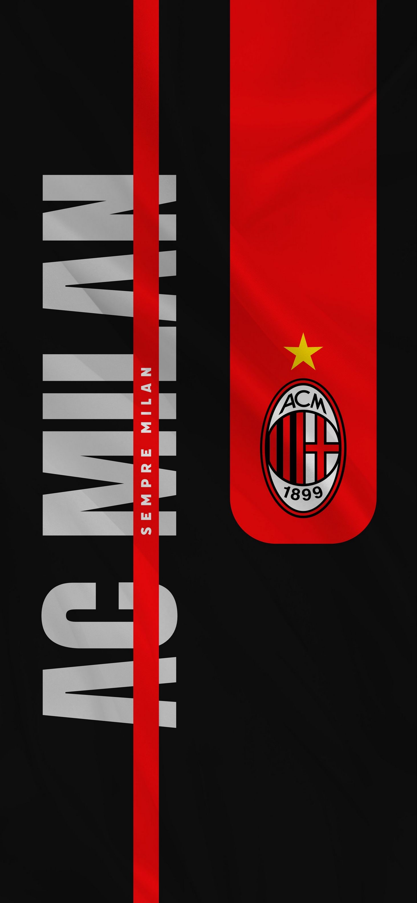

Я вболіваю за AC Milan ⚽. Це один із найсильніших клубів світу з багатою історією та легендарними гравцями.

AC Milan має багато титулів, включаючи численні чемпіонства в Італії та перемоги в Лізі чемпіонів УЄФА. Клуб відомий своїм стильним футболом і сильною обороною.
Мені подобається дивитися матчі AC Milan, особливо коли грають проти їхніх головних суперників, таких як Inter Milan та Juventus. Атмосфера на стадіоні завжди неймовірна, і я люблю підтримувати свою команду разом з іншими фанатами.
AC Milan також відомий своїми легендарними гравцями, такими як Паоло Мальдіні, Андреа Пірло та Златан Ібрагімович. Вони зробили великий внесок у історію клубу і залишили незабутній слід у світі футболу.
Я сподіваюся, що AC Milan продовжить досягати великих успіхів у майбутньому, і я з нетерпінням чекаю на нові захоплюючі матчі та перемоги моєї улюбленої команди!